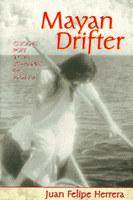

<body bgcolor="#FFFFFF" text="#000000" link="#0000FF" vlink="#CC0000" alink="#CC0000"><center><hr width="350" size="1" align="center" noshade>The internal struggle of a Chicano poet returning to the Mexican homeland only to find his Indian realities distorted and exploited<hr width="350" size="1" align="center" noshade><p><a href="https://cdcshoppingcart.uchicago.edu/Cart/ChicagoBook.aspx?ISBN=9781566394819&&PRESS=temple" target="_top">Buy this book!</a> | <a href="https://cdcshoppingcart.uchicago.edu/Cart/Cart.aspx?PRESS=temple" target="_top">View Cart</a> | <a href="https://cdcshoppingcart.uchicago.edu/Cart/Cart.aspx?PRESS=temple" target="_top">Check Out</a></p><p></p></center><!--none//--><h1>Mayan Drifter</h1>
<H2>Chicano Poet in the Lowlands of America</H2>
<h3>Juan Felipe Herrera</h3>
<P>cloth 1-56639-481-3 $80.50, Jan 97, <FONT COLOR=#990033>Out of Stock Unavailable</FONT>
<br>paper 1-56639-482-1 $36.95, Jan 97, <FONT COLOR=#990033>Available</FONT>
<BR> 330 pp
6x9
18&nbsp;halftones
</P><BLOCKQUOTE><I>"In this account of his return to his homeland of Chiapas, Mexico, Herrera has created something more than a memoir. It is, by his own account, a combination of literary project, spiritual quest and cultural investigation.... Herrera's work is wistful, but it also has depth. This conflicted and rewarding read will undoubtedly become a classic of Chicano literature."</I>
<br>&#151<b><I>Publishers Weekly</I></b> (starred review)<I></I></BLOCKQUOTE>
<p>In <I>Mayan Drifter </I>Juan Felipe Herrera journeys to the Maya Lowlands of Chiapas on a quest for his Indio heritage and a vision of the multicultured identity emerging in America. He attempts to shed the trappings and privileges of his life in California in order to reduce his distance from the dispersed and shrinking Mayan population. In Mexico, Herrera seeks a deeper understanding of his homeland's history, its exploitation, and looks to realize his own place in relation to the struggle of his people.
<p>Like the Mayan drifter, the text crosses and extends boundaries. In a variety of narrative voices, poems, and a play, across time, Herrera recounts how the Maya have been invaded by the Spanish, the government, the multinational corporations of the petrochemical industry, and anthropologists. The Maya survive and resist as their numbers dwindle and the forces that mount against them become more powerful.
<p>Inspired by the Maya's resilience, Herrera envisions the disappearance of borders and evokes a fluid American self that needs no fixed identity or location.
<BR>&nbsp;<h2>Excerpt</h2><P>Excerpt available at <a href="http://www.temple.edu/tempress">www.temple.edu/tempress</a></p>
<BR>&nbsp;<h2>Reviews</h2>
<p><I>"Inspired by Maya's resilience, Herrera envisions the disappearance of borders and evokes a fluid American self that needs no fixed identity or location. Mayan Drifter is a literary tour de force, a kind of safari into the soul and fate of a remarkable people, a monument to what has gone, and a template for what might yet come to pass."</I>
<br>&#151<b><I>The Midwest Book Review</I></b>
<p><I>"This is a book written from the heart. Through powerful prose, </I>Mayan Drifter<I> lays bare the skeletal essence of a hemispheric history in which the Lacandon Maya and jungle become metaphor for the onslaught confronting the indigenous peoples of the Americas. Cast in the moving travelogue of personal memory and the ethnographic, the people of Tijuana's shanties, California's migrant paths and cities, Mexico City sidewalks, and colonial Mexican centers all form part of the mosaic. Juan Felipe's journey is a true transmigration into the essence of a conceptual and geopolitical borderland and its current dilemmas. This is a passionate and complex tale set in modern times. Full of imagery and color, at times joyful and hilarious, and at others tearfully sad, Mayan Drifter speaks to us all. Juan Felipe Herrera offers us a book to read, and reread, to think with and ponder; in </I>Mayan Drifter<I> we hear the voices of humanity that speak out powerfully in eloquent prose."</I>
<br>&#151<b>Roberto Alvarez</b>, Associate Professor of Anthropology, Arizona State University
<BR>&nbsp;<h2>Contents</h2><P>
<p>Acknowledgments
<br>American Prelude(s)
<br><I>To América with Love &#149
The Third Conversation</I>
<p><b>Part I: Gathering a Mayan Repertoire</b>
<br>1. Tuxtla Oil Float
<br>2. Juárez Gypsies
<br>3. K’ayum on the Door
<br>4. Rain Forest Donation Box
<br>5. Eating Tortillas 160 Kilometers North of Guatemala
<br>6. Gathering a Mayan Repertoire
<br>7. Fray Bartolomé de Las Casas: Landscape with Graffiti
<br>8. Tourist Stop by the Christopher Columbus Depot
<br>9. Zen House Facing Tzontevitz (Sacred Mountain of the Chamula)
<br>10. From the Mountain Face
<br>11. Na Bolom: Histories and Fragmentos
<br>12. Admire the Maid into Revolution
<br>13. The Native Position
<br>14. Indian Corridos for Justice
<br>15. Red Rebozos for Rigoberta Menchú
<br>16. Late Shadow at the Monastery
<p><b>Part II: Welcome to El Prospero</b>
<br>17. The Desolations of Ocosingo
<br>18. La Ruta Maya
<br>19. Tumbo (Meditations en Route)
<br>20. The Man with a Machete
<br>21. Visitations
<br>22. Nothing Is Taken That Is Not Given: Ode to the Traveling Men
<br>23. In a Field of Arrows
<br>24. Half Concrete, Half Caoba
<br>25. Dream Prowl
<br>26. Last Song of the White Turtle
<br>27. Kassandra and the Descrambler
<br>28. El Emperador
<br>29. Nuk of la Tiendita
<br>30. Lake Waters of the White Jaguar
<br>31. Young Husbands
<br>32. Culos in la Piedra
<br>33. El Hombre de la Selva
<br>34. The Coming of the Black Ocean Liner
<br>35. PEMEX Boulevard
<br>36. Bor with Hand Signs
<br>37. Antonio, Seventy Years Old
<br>38. Malaria, Pneumonia, Tuberculosis
<br>39. Mojarrita
<br>40. La Ultima Visita (Farewell to the T’o’ohil)
<br>41. Jungle Bolero
<p><b>Part III: Jaguar Hotel</b>
<br>42. Jaguar Hotel
<p><b>Part IV: Anahuak Vortex</b>
<br>43. Anahuak Vortex (Mexico City, 1995)
<p><b>Part V: Mayan Drifter</b>
<br>44. Letter to K’ayum Ma’ax (via Palenque)
<p>Glossary
<br>Selected Readings
</P><BR>&nbsp;<H2>About the Author(s)</H2>
<table><tr><td valign="top"><img src="/tempress/authors/1215_au.gif" height="90" width="75"></td><td width="100%" valign="middle"><p><B>Juan Felipe Herrera</B> is Associate Professor of Chicano and Latin American Studies at California State University, Fresno. He has taught creative writing from third grade to university level and is the author of numerous poetry collections including <I>Akr&iacute;lica, Facegames, Night Train to Tuxlta, </I>a collection of poems and stories, and a children's book entitled <I>Calling the Doves.</I></P></td></tr></table>
<BR><H2>Subject Categories</H2>
<p><A HREF="/tempress/latin.html" TARGET="_top">Latin American/Caribbean Studies</a>
<BR><A HREF="/tempress/general.html" TARGET="_top">General Interest</a>
</p>
<p align="center"><a href="https://cdcshoppingcart.uchicago.edu/Cart/ChicagoBook.aspx?ISBN=9781566394819&&PRESS=temple" target="_top">Buy this book!</a> | <a href="https://cdcshoppingcart.uchicago.edu/Cart/Cart.aspx?PRESS=temple" target="_top">View Cart</a> | <a href="https://cdcshoppingcart.uchicago.edu/Cart/Cart.aspx?PRESS=temple" target="_top">Check Out</a></p><p><font face="Arial" size="1"><a href="copyright.html" onMouseOver="window.status='Web Copyright Policy';return true;" onMouseOut="window.status=''" title="Web Copyright Policy">&copy;</a> 2015 <a href="http://www.temple.edu" target="new" onMouseOver="window.status='Link to Temple University home page';return true;" onMouseOut="window.status=''" title="Link to Temple University home page">Temple University</a>. All Rights Reserved. http://www.temple.edu/tempress/titles/1215_reg.html</font></p>